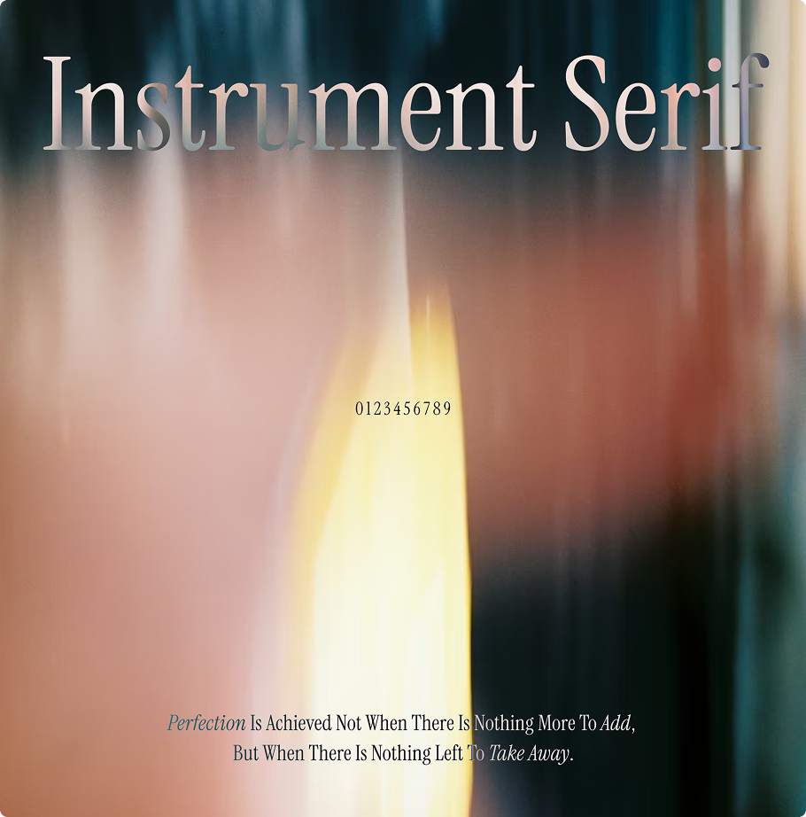
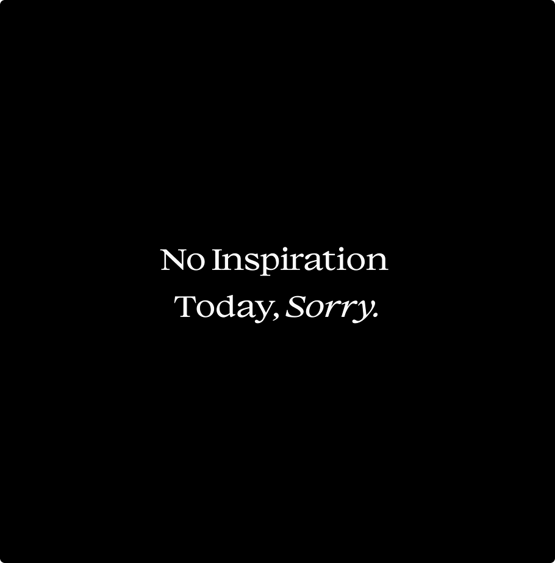

Instrument Serif
Perfection is achieved not when there is
nothing more to add, but when there is
nothing left to take away.
Antoine de Saint-Exupéry - Wind, Sand and Stars


평소에 세리프체를 자주 쓰진 않지만, 꼭 써야 한다면 장식이 과하지 않은 타입을 선택합니다.
Instrument Serif는 그런 면에서 부담스럽지 않으면서도 균형이 잘 잡힌 서체라고 생각해요.
클래식한 세리프체의 형태를 하고 있지만, 길이가 길고 폭이 좁아 개성있는 느낌입니다.
특히 산세리프체와 조합하면 미니멀한 디자인에도 자연스럽게 어울려서, 웹이나 포스터 작업에서
포인트로 활용하기 좋다고 생각합니다. 한 가지 아쉬운 건 Regular와 Italic 버전밖에 없다는 점입니다.